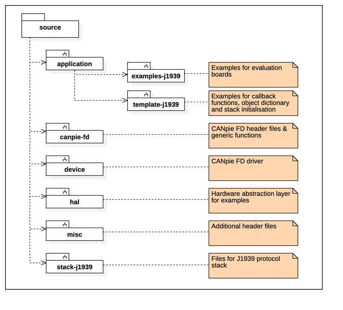

|
J1939 Protocol Stack
Version 4.18.00
|
|
J1939 Protocol Stack
Version 4.18.00
|
All header files and source files of the J1939 protocol stack package are located inside the source directory. The following picture shows an overview of the source code structure.

The files inside the source/application directory shall be used to adopt the J1939 protocol stack to the target. All other files shall not be modified by the user.
| Component | Directory | Description |
| J1939 Code Examples | application/examples-j1939 | Examples for evaluation boards |
| Template Files | application/template-j1939 | Examples for callback functions, object dictionary and stack initialization |
| CANpie FD API | canpie-fd device | Responsible for reading and writing CAN (FD) messages between the J1939 protocol stack and the CAN (FD) bus |
| Hardware Abstraction Layer | hal misc | Compiler data type definition and optional hardware abstraction layer |
| Protocol Stack Files | stack-j1939 | Implementation of the J1939 protocol stack |